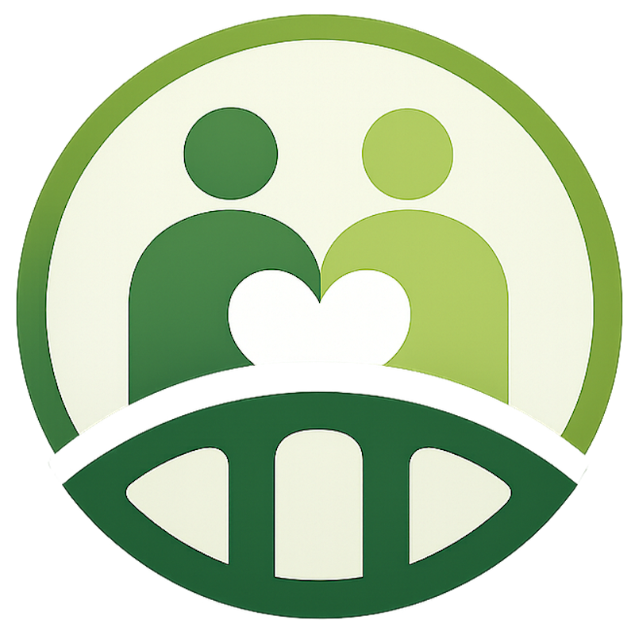
CareBridge AICareBridge AI，把零碎訊息、不同語言與日常紀錄，整理成家人都能安心接住的照護脈絡。
Apple Speech Framework 將照護描述轉成文字，讓下一步分類與摘要自然接續。
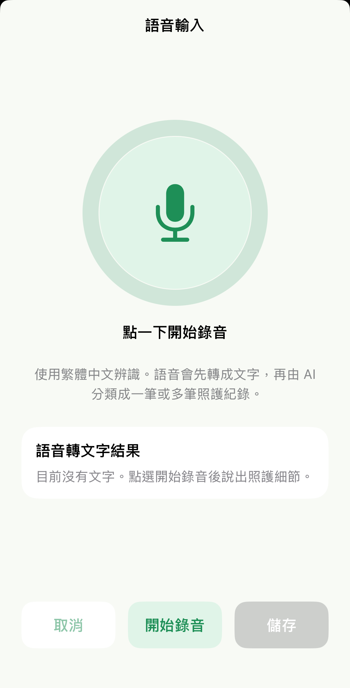
照護者用母語輸入，家屬直接看見設定語言；重要細節不必在不同工具之間來回搬運。
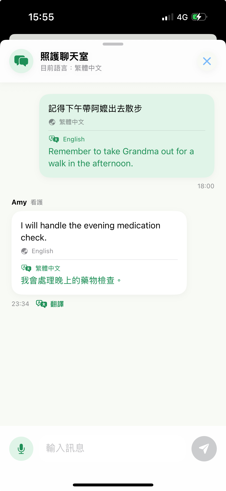
選擇類別與燈號，幾秒內完成當下狀態評估。
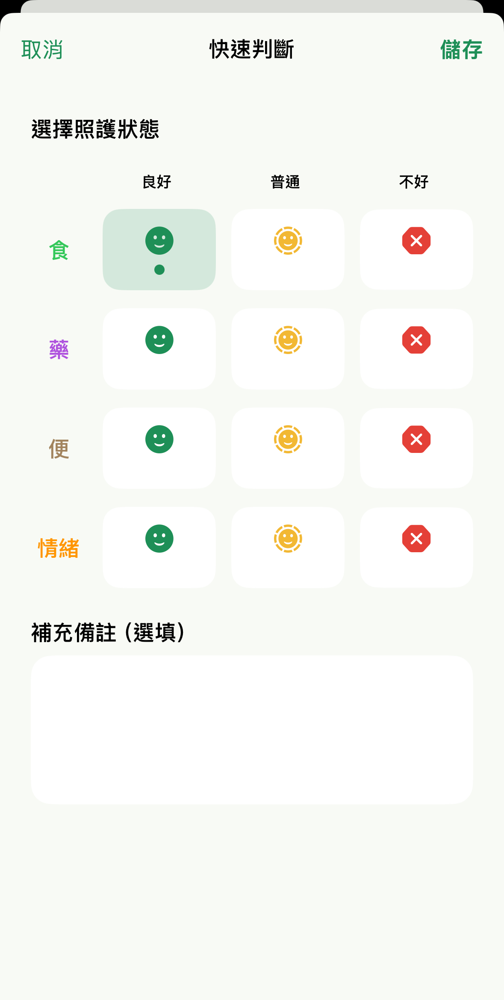
長輩不舒服、情緒異常、需要注意什麼，往往只剩幾個單字與猜測。
回診、領藥、復健與每日例行任務，集中在月曆與提醒裡。
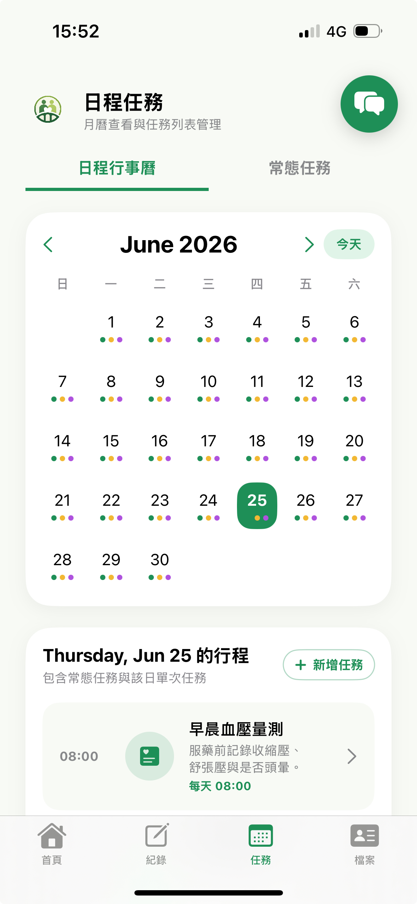
紀錄集中在被照護者的共同時間線，不再散落在私人訊息與口頭記憶。
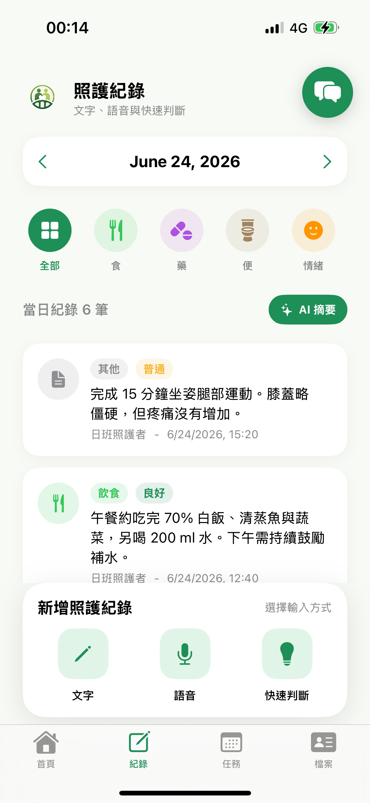
透過 QR Code 快速邀請家人與照護者，共同管理同一位被照護者。
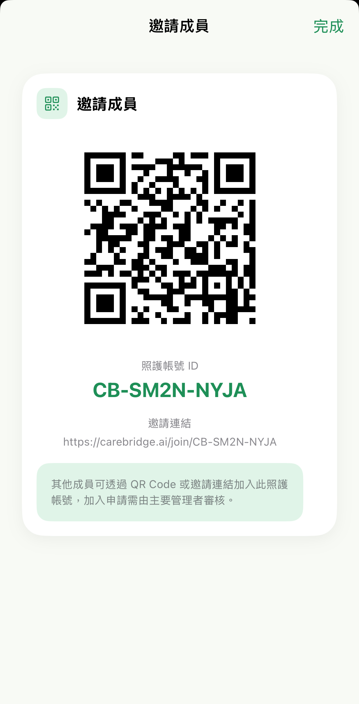
LINE、口頭提醒、臨時便條與不同照護者的記憶，讓重要變化難以及時被看見。
飲食、用藥、排便與情緒，都能用紅黃綠燈快速評估，降低日常紀錄門檻。
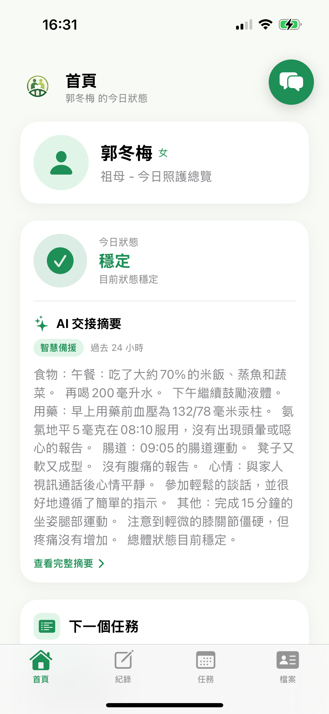
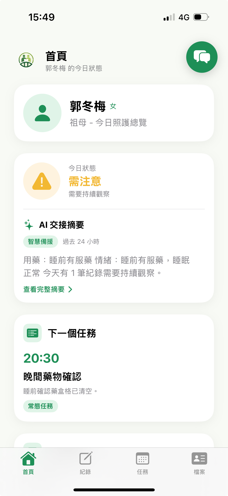
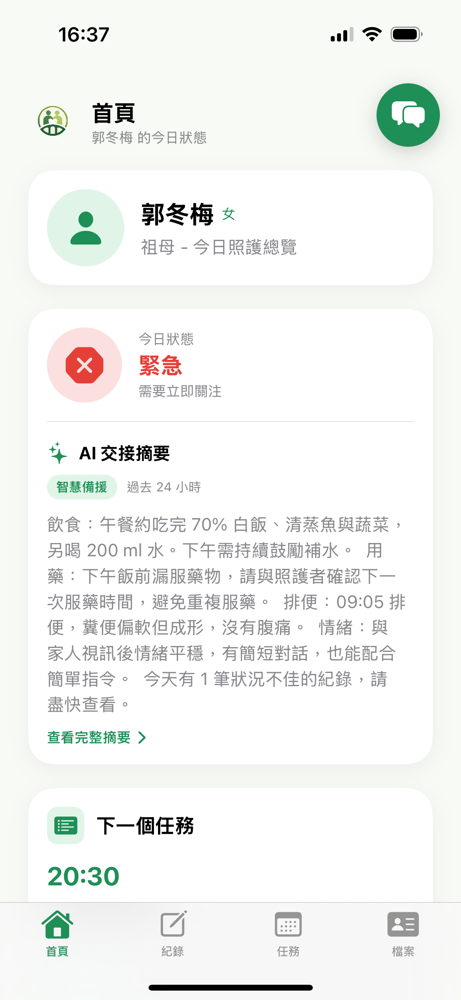
以被照護者為中心，AI 在裝置端協助理解、分類、摘要與翻譯。
首頁整合目前燈號、AI 交接摘要與下一個任務，讓照護者快速進入今天的重點。
不必填複雜表單。用語音或文字描述，保留照護現場真正重要的上下文。
「阿嬤中午吃了半碗粥，精神還不錯。」
Apple 原生框架支援語音、翻譯、摘要、同步與提醒；裝置端 AI 讓照護在無網路時依然可靠。
飲食、用藥、排便、情緒與自訂類別，從自然敘述轉成結構化照護資料。
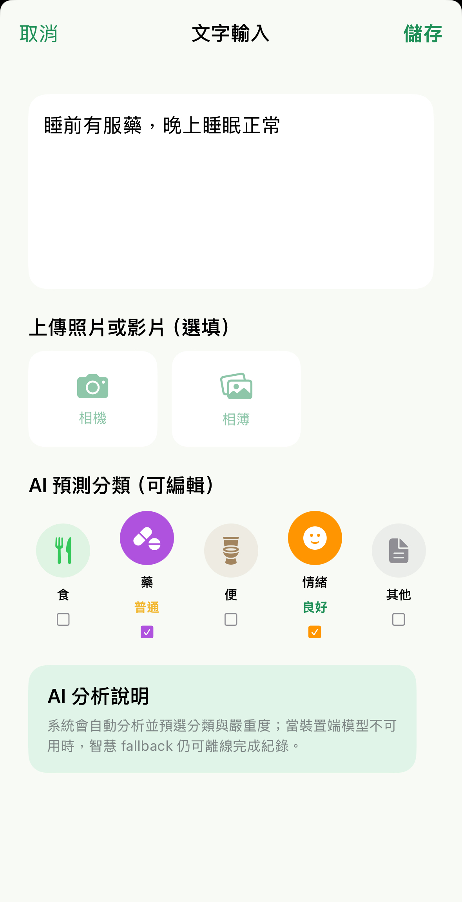
多筆紀錄自動彙整，搭配紅黃綠燈號，讓穩定、需注意與異常清楚浮現。
聊天室支援語音轉文字與即時翻譯，保留的不只是句子，更是完整的照護情境。
Nenek sudah minum obat setelah makan.
阿嬤已經在飯後服藥。
月曆與提醒掌握時程，健康資料集中管理，QR Code 讓照護者快速加入共同協作。
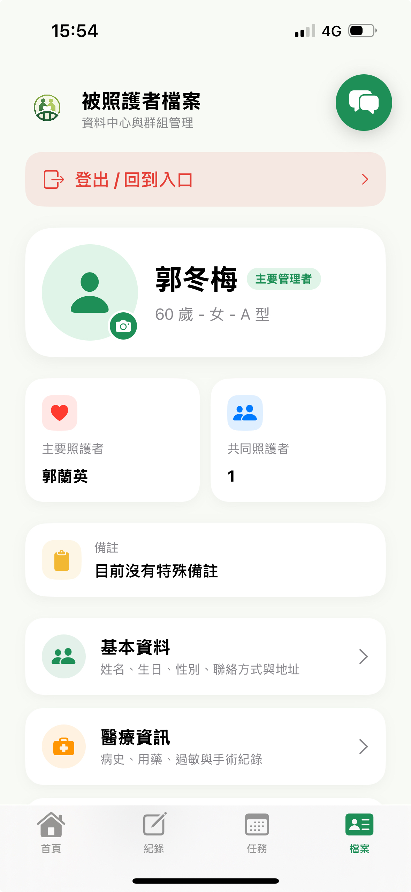
把照護資訊變成共同語言，把每一次關心接成一座不會斷線的橋。